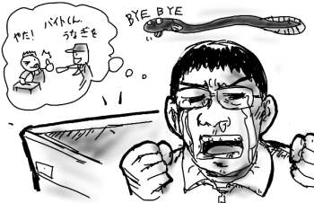
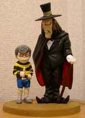
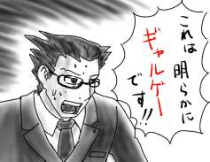
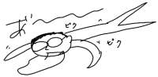
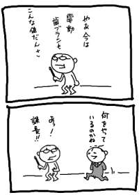

着メロは「大江戸戦士トノサマン」です(挨拶)．
夕方から大宮まで出かけました．いきなり寒くなったので冬服を補充したかったのです．
しかし，マルイなどのオシャレメン's オシャレシャツ売り場は，この寒空のように僕を冷たく拒んでいたので居たたまれなくなり，結局ユニクロに逃げ込んでしまいました．俺の腰抜けめ！！しかし，ユニクロの異常な安さに無理矢理自分を納得させます．ハハハ…安さが一番さ…(デフレに貢献)．
ユニクロのレジが異様に混んでいたので帰宅が遅れ，危うく一週間分の食料買い集め祭に遅刻するところでした．閉店5分前にスーパーに駆け込み，一週間分の食料をかき集めなくてはなりません．
店内を駆け回り中にふと加工魚コーナーに目をやると，大陸からやって来たウナギをカバ焼いた奴が値引き後250円という格安の値段で売っていたので，本日のディナーを豪華にこれで決めるのもありかと夢を膨らませたのでした．しかし残り時間はあとわずか．ここで悩むより先に明日からの食料をかき集める必要があります．加工魚コーナーを後回しにして，僕は再び店内を駆け回り始めました．(つづく)
(つづき)かくして，加工魚コーナーに戻って来た僕の目に飛び込んで来たのは，からっぽの陳列台でした．泣いた(素で)．
なんだよ，閉店前に片付けるなんて無しだよ．今，関係者以外立ち入り禁止区域では，バイトとかが「やったー今日はうなぎゲットっすvvv」とか山分けしてるに違いないんだ．客に売れよ！いや，売って下さい…．

そんなわけで，暗黒の空がぐんぐんと気温を吸い取る中，涙を凍り付かせながら帰途についたのでした．(おわり)
コンビニに寄ったついでに「悪魔くん大画報」を思わず買ってしまいました．
ここは基本を押さえるために，店頭の残り3箱のうちから悪魔くん&メフィストを引き当てたいところです．まず，一番ズッシリ重い箱は百目親子だろうと思われるので外します．そして，もう一個は箱が多少出っ張っていることから大海魔かペロリゴンだろうと判断して外します．残った一個は箱も軽くて出っ張ってないので，人型２体分が入っている可能性が一番高いということになります．
うわ，成功してるよ…(↓)

このように不用意に魔法陣に踏み込んだらズタズタにされますよ？(いらぬ心配)．悪魔くんが垂れ目じゃないので，少年マガジン版です(メフィストの時点でそうです)．
どうせなら千年王国版を出してもらって太平洋電機社長(父)とかどうしようもないラインナップで揃えて欲しいなぁ．
少年マガジン版悪魔くん，単行本の1話と2話でそもそもソロモンの笛の形が違うような，ゆるゆるの展開が割と好きでした．ペロリゴンはTVドラマの方で，漫画ではビチゴン(うんこの怪獣)だった気がします．
というわけで，ここ数日はGBAで逆転裁判ばっかりやってましたよ(クリアしましたよ)．
「ゆさぶる」「つきつける」というシンプルな操作で進行する法廷シーン．第１話の最後で，依頼人にまで「つきつけた」時は，この操作の汎用性に震えが走った物です．探偵シーンでは手がかりを集めて伏線を張るだけにとどめ，法廷シーンで証人を揺さぶっているうちに推理が進行する，事件について図と地が逆転する展開も巧みだと思いました．敵(検事)の手強さを「異議あり！」の頻度で表現してあるのもうまいです．
最後の話では主要登場人物のエピソードが収束してくるし，いかにもラスボスっぽい人物も出てくるし，なかなか楽しくプレイし終わりました．まぁ多少ヤオイぽいのは仕方ないよね(そうか?)．
というわけで，今手元には「逆転裁判２」が！(弱)
さっそく２話まで話を進めたのですが…．ええと．なんというか．これはギャルゲーですか？思わず親密度を上げるところでした．
ヒロイン，ロリキャラ，おとぼけギャル，天才少女検事…．行きすぎたキャラ立て演出…．天才少女検事は法廷で鞭を振り回すし，ロリキャラは最初に出会った時はすぐに逃げ出すというギャルゲースタンダード(?)を披露してくれました．

新システム「サイコ・ロック(心理錠)」はなかなかおもしろいとは思いましたけど，１の「探偵シーンは手がかりを集めて伏線張り．法廷でのみ推理が進行する」というルールを散漫にした印象を受けますし，そもそも超心理現象とか霊力とか当然のように出て来て，無茶苦茶不安になりました．あれぇ？
手元にゲームボーイアドバンスと「逆転裁判(期間限定廉価版)」が！(弱)
証言開始：
- 会社が終わって，7-11に寄ったんですよ．▼
- ヤンキーボーイのいない7-11に行きたかったから，いつもは通らない道を使いました．そこに7-11があるのは知ってましたからね．▼
- 買い物をすませて7-11を出たら，近道っぽい方向の信号がちょうど青だったので，そちらへ自転車を走らせました．初めて通る道でしたけど家の方向だったんです．▼
- ところが，その道は予想以上に曲がりくねっていて，結局道に迷ってしまいました．▼
- しばらく走り回っていると知っている道に出てほっとしました．▼
- そこはちょうどゲーム屋の近くで，たまたま財布に十分なお金が入っていたので昨日体験版がおもしろかったこともあって，せっかくだからと購入した次第です．▼
尋問開始：
- そこはちょうどゲーム屋の近くで，たまたま財布に十分なお金が入っていたので昨日体験版がおもしろかったこともあって，せっかくだからと購入した次第です．▼
[つきつける]
ここにあなたの通帳があります．これによるとあなたは当日7-11でお金を引き出している．これは「たまたま財布にお金が入っていた」という発言と明らかに<ムジュン>しています！最初から「GBAを買うつもりで下ろした」のではありませんか？
証言開始：
- 7-11に寄った時に，お金を下ろしたのは事実です．▼
- 晩飯を買うのにお金が足りなかったからです．▼
- その時余分に下ろしたので，たまたま財布にお金が入っていたのでした．失礼しました．▼
尋問開始：
- 晩飯を買うのにお金が足りなかったからです．▼
[つきつける]
このレシートによると，あなたは当日7-11で<飲み物>しか買っていない！「晩飯が買えなかったから」というわけではないのです．そもそも晩飯を買う訳でもないのに，何故7-11に行ったのでしょう．家のすぐ近くにもコンビニがあるのに．
7-11には，
＞1.キャッシュディスペンサー
2.ガンプラ
3.美味しいお弁当
が置いてあります．
[1選択]
7-11にはキャッシュディスペンサーが置いてあります．あなたはGBAを買うお金を下ろすためにわざわざ7-11にまで寄る必要があったのです！！
[証人卒倒]
という感じで，楽しく推理プレイしています．俺って弁護士の才能ねぇ？(ありません)
ちなみに，本当にガンプラが置いてあってびびりました．
「逆転裁判1, 2」の体験版をプレイする(今さら)．うわーおもしろいなぁ！(今さら)
とまぁ，そういう理由で更新に少し間があいてしまいました．なんか，通常の体験版に加えて，成歩堂龍一がギコネコのバージョンもプレイしてた気がするけど，気のせいです．たぶん．
髪を切りに行きました．今日の対戦相手は，以前アイコラの話題で僕を恐怖に陥れた彼その人であり，これはなかなか厳しい戦いになりそうです．
話題はいきなりWinMXにおよび，アイドルのムービーを落としたらアイドルと全然関係ないゲームの説明ムービーで悔しかった，とか，何万もするソフトがただで落とせた，とか，のっけから容赦のない攻撃を浴びせてきます．しかもダイヤルアップ回線で頑張って落としているそうです．
さらに立て続けに，「そんな訳で僕なんかでも楽しくPCを活用してるんですけど，ミズグチさんみたいなパソコンのプロになると，どんなことするんですか？ウィルス作ったりとか？ハッカーとかしたりして？」と猛攻撃．
一気に戦意を喪失した僕は「ハッカーとクラッカーが違う」ことすら言明できないまま，曖昧に首を傾げて「いや，しないですけど…」というのが精一杯でした．完敗だ…．
彼はスタイリストの位が高いらしくて，いつもより1000円も余計に取られました．踏んだり蹴ったりとはこのことです．心重く(頭と財布は軽く)美容室から出たら，外はもう夕闇に包まれていました．
ゲゲゲのゲー．
「中華パン」というのが木村屋から発売されたようです．
ナン生地の中に中華まんの具を包み込み
表面にからしマヨネーズとチーズを
トッピングしました。
中華まんの具以外の全ての要素が中華を履き違えてるあたりが素晴らしいです．中華まんを作り続てウン十年の木村屋が，いい感じに飽きて来たのを匂わせるナイス脱力プロダクトだと思います．
適当に，寝，洗濯，寝，掃除，寝，食，チャット，寝，チャットしてたら朝の５時になっていたという何も生み出さないのにも程があるような休日でした．あー．

会社帰りに電器屋に寄ったので，ついでに興味本位で電動歯ブラシコーナーも覗いてみました(影響されやすい)．まぁ，実際のところ買わないんですけどね．１万円弱あれば大抵の物が買えるみたいです．思わず手に取って自分の歯に押し当てている様を妄想します．どれもこれも柄がゴッツイなぁ．端から見ると電動歯ブラシ(展示品)を手にあさっての方向を見つめて微妙な表情を浮かべる変態さんに違いありません．
そして電器屋でMOメディアを買いに来た課長に後ろからケツを叩かれて心底びびりました．

会社以外の場所で会社の人に会うと，何故しどろもどろになるのだろう．